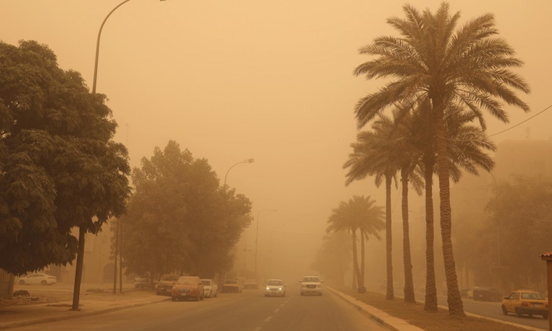

مصادر البيانات والشركاء: مركز برشلونة الإقليمي للتنبؤ بالغبار (BDRC)
تعتمد منصة "جودة الهواء في العراق" في تحليلاتها وتوقعاتها على بيانات متقدمة وموثوقة عالمياً صادرة عن مركز برشلونة الإقليمي للتنبؤ بالغبار (Barcelona Dust Regional Center).
يُعد هذا المركز الركيزة الأساسية لنظام الإنذار المبكر وتقييم العواصف الرملية والغبارية (SDS-WAS) التابع للمنظمة العالمية للأرصاد الجوية (WMO) في منطقة شمال أفريقيا والشرق الأوسط وأوروبا.
المسيرة المهنية والأكاديمية
شغلتُ مناصب بحثية وأكاديمية في نخبة من المؤسسات العالمية، مما أتاح لي تطوير أنظمة معقدة للتنبؤ بالمخاطر الطبيعية وبناء نماذج الاستجابة الاستباقية:
- جامعة دورهام (Durham University) - المملكة المتحدة: باحث مشارك حالياً، أعمل على تطوير خوارزميات الأتمتة لنماذج التنبؤ بالمخاطر الجيومكانية.
- المعهد الوطني الإيطالي للبحث العلمي (CNR-IRPI) - إيطاليا: زميل بحثي متخصص في صيانة وتطوير أنظمة الإنذار المبكر الوطنية للمخاطر الجيولوجية.
- جامعة سيجونج (Sejong University) - كوريا الجنوبية: زميل أبحاث ما بعد الدكتوراه في مجال النمذجة المكانية وتعلم الآلة.
- جامعة أنقرة (Ankara University) - تركيا: عضو هيئة تدريس في كلية العلوم التطبيقية وقسم التطوير العقاري.
- جامعة جوهانسبرغ (University of Johannesburg) - جنوب أفريقيا: زميل أبحاث في كلية الهندسة والبيئة المبنية.
واقع الغبار في العراق: لماذا هذا المشروع الآن؟
تشير الدراسات العلمية والتقارير الرسمية إلى تصاعد خطير في حدة العواصف الغبارية في العراق. حذرت وزارة البيئة من احتمالية مواجهة العراق لنحو 272 إلى 300 يوم مغبر سنوياً في السنوات القادمة، مقارنة ببضعة عقود فقط في نهاية القرن الماضي.
هذا الارتفاع الملحوظ يعود لعدة أسباب تشمل التغير المناخي، الجفاف المستمر، سياسات السدود، وتدهور الغطاء النباتي، وسط فجوة واضحة بين الخطط الحكومية والقدرة على تنفيذ مشاريع مكافحة التصحر الفعلية.

شكل توضيحي: A dust storm hits Baghdad, Iraq, on May 16, 2022. A dust storm swept across much of Iraq on Monday, sending more than 2,000 people to hospitals with respiratory problems and forcing the closure of airports, schools and some government offices.(Photo: Xinhua - Global Times)
رؤية المشروع: من الاستجابة المتأخرة إلى الإدارة الاستباقية
أثبتت الأبحاث المنشورة أن أنظمة الرصد الفوري (Nowcasting) هي المفتاح لتقليل التعرض للملوثات. الغبار ظاهرة مكانية مستمرة، لذا فإن نظامنا يهدف إلى:
- تكامل البيانات: دمج بيانات الأقمار الصناعية مع الذكاء الاصطناعي لتقليل نسبة "عدم اليقين" (Uncertainty).
- التمكين الوقائي: التنبؤ بالخطر قبل وقوعه بساعات، مما يساهم في حماية الصحة العامة وتقليل الخسائر الاقتصادية في قطاعات النقل والزراعة.
- الشفافية العلمية: توفير منصة حرة ومستقلة تعرض واقع جودة الهواء بعيداً عن أي تسييس، لدعم الباحثين في دراساتهم الوبائية والبيئية.
هدفي هو تحويل البحث الأكاديمي الرصين المنشور في المجلات العالمية إلى خدمة وطنية مجانية، تساهم في حماية صحة المواطن ودعم الاستقرار البيئي في العراق.